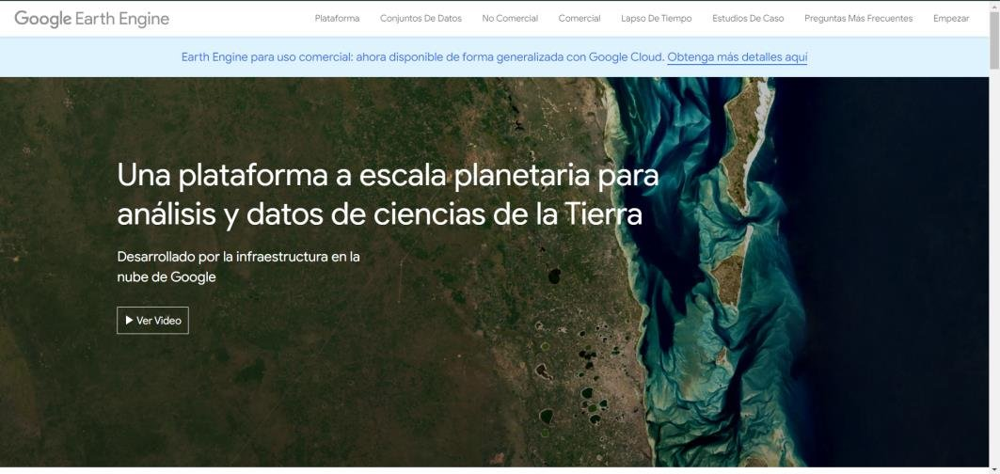
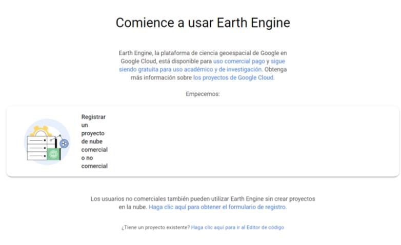
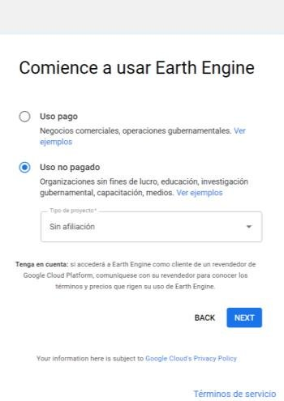
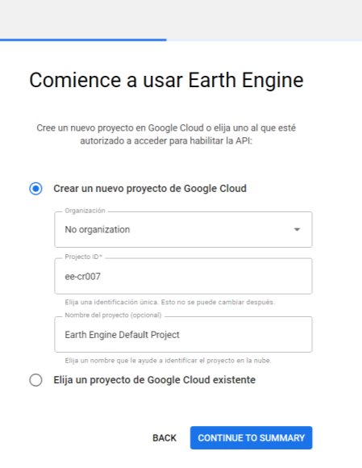
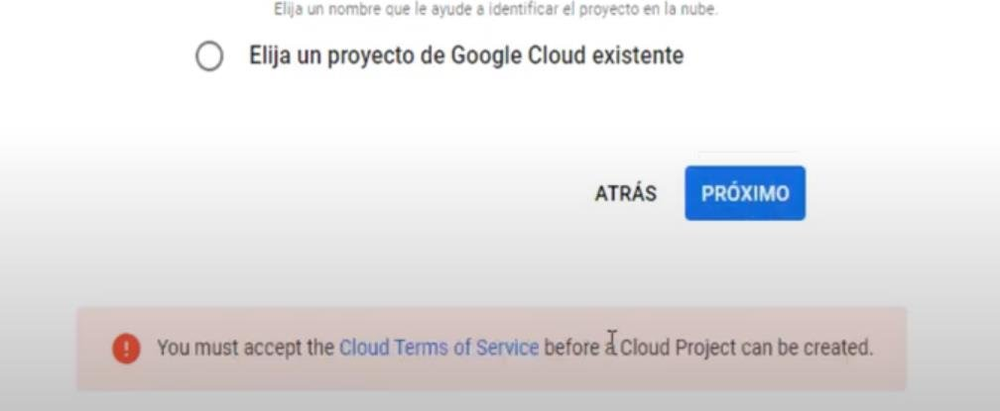
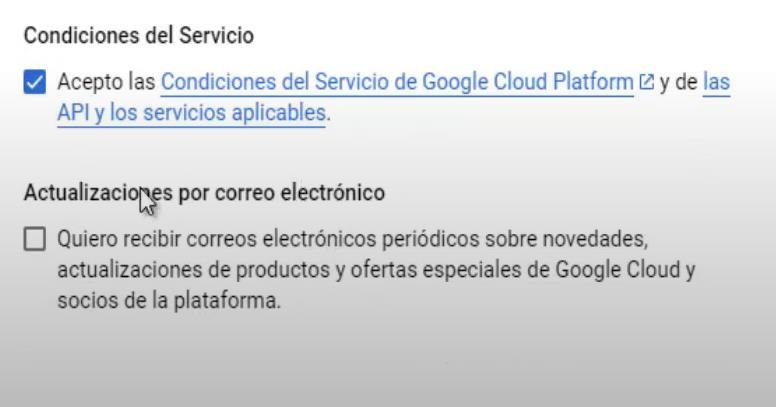
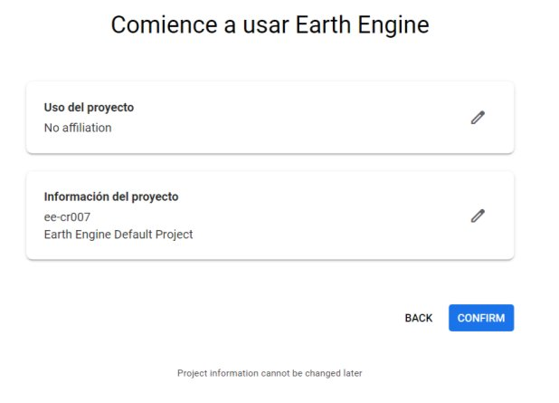

Creación y registro en Google Earth Engine
Crea tu cuenta, registra un proyecto para uso no comercial y ejecuta tu primer script en Google Earth Engine.
Introducción ¶
Google Earth Engine es una plataforma que da acceso a una gran cantidad de datos geoespaciales y herramientas de análisis para investigadores, científicos y desarrolladores que quieren estudiar nuestro planeta. Para usarla hay que registrarse. En esta guía verás el proceso completo, desde la cuenta hasta la configuración inicial del proyecto.
Objetivo ¶
- Registrar un proyecto de Google Cloud para uso no comercial.
- Crear el proyecto con su ID y nombre.
- Aceptar las condiciones y confirmar el registro.
- Dejar listo el Code Editor para empezar a trabajar.
Antes de empezar: necesitas una cuenta personal de Google (Gmail). Te recomendamos usar Chrome.
Paso 1: Entra a Earth Engine ¶
Dirígete a earthengine.google.com y haz clic en Empezar (Get started), en la esquina superior derecha de la página.

Paso 2: Registra un proyecto de nube ¶
Selecciona Registrar un proyecto de nube, ya sea comercial o no comercial.

Paso 3: Elige uso no pagado ¶
Elige Uso no pagado y selecciona el tipo de proyecto que mejor se ajuste a ti. Por ejemplo, Sin afiliación. Luego haz clic en Siguiente.

Paso 4: Crea el proyecto en Google Cloud ¶
Selecciona Crear un nuevo proyecto en Google Cloud. Luego elige el tipo de organización y escribe el ID del proyecto. Por ejemplo:
| Campo | Ejemplo | ¿Hay que cambiarlo? |
|---|---|---|
| Organización | Sin organización | Sí |
| ID del proyecto | ee-cr007 | Sí, debe ser único |
| Nombre del proyecto | Earth Engine Default Project | No |
Haz clic en Continuar para resumen.
Anota tu ID de proyecto. Lo vas a necesitar para usar Earth Engine desde Python, QGIS o ArcGIS Pro.

Paso 5: Acepta los términos ¶
Si aparece un aviso rojo, haz clic en el enlace de los términos. En la ventana que se abre, acepta las Condiciones del Servicio de Google Cloud Platform para poder usar el proyecto.


Paso 6: Confirma el registro ¶
Cierra la pestaña de Google Cloud, regresa a la página de registro y confirma la información. Haz clic en Confirmar.

Conclusión ¶
Con el registro completo ya puedes usar los datos y herramientas de Earth Engine para estudiar la Tierra y el medio ambiente. El siguiente paso es aprender a buscar y mostrar imágenes satelitales.